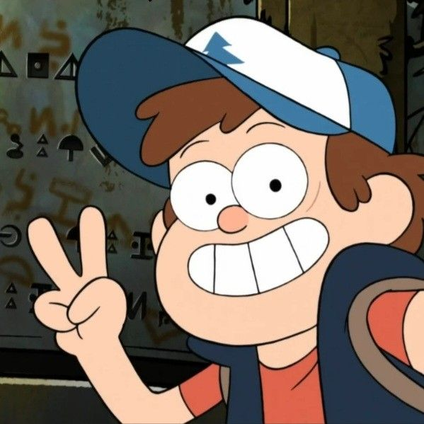

О персонаже

Диппер Пайнс (англ. Dipper Pines) — один из главных героев мультсериала «Гравити Фолз». 12-летний мальчик, который приезжает на летние каникулы в вымышленный город Гравити Фолз в штате Орегон к своему двоюродному дедушке Стэну.
Характер
Диппер — любознательный, умный и находчивый мальчик. Он всегда стремится разгадать тайны Гравити Фолз, часто рискуя собой и своей сестрой.
Приключения Диппера
За время пребывания в Гравити Фолз Диппер столкнулся с множеством сверхъестественных явлений и существ:
- Обнаружил дневник №3, содержащий информацию об аномалиях Гравити Фолз
- Сражался с демоном Биллом Шифром
- Встретил множество мифических существ: гномов, русалок, призраков и других
- Раскрыл тайны своего двоюродного дедушки Стэна
Важные события
- Прибытие в Гравити Фолз
- Обнаружение дневника
- Первая встреча с Биллом Шифром
- Битва с апокалипсисом